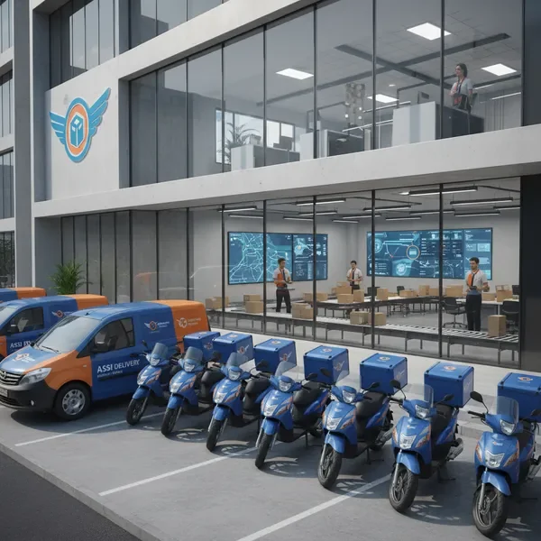
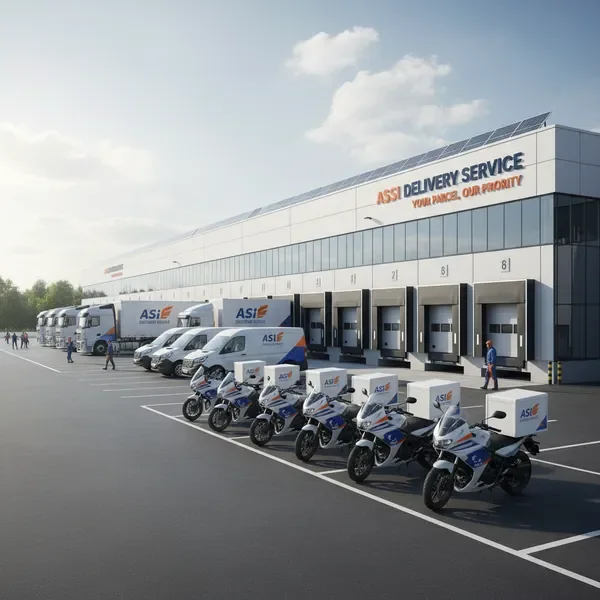

שותפים למהירות ולהצלחה של העסק שלכם
Assi Delivery Service הוקמה מתוך חזון ברור - לספק שירותי שליחויות ולוגיסטיקה ברמה הגבוהה ביותר לחברות גדולות בישראל. במשך שנות פעילותנו, הפכנו לשותפים אמינים של מאות עסקים המסתמכים עלינו למשלוחים קריטיים.
אנחנו מאמינים שמהירות ואמינות הם לא רק ערכים - הם התשתית להצלחת העסק שלכם. כל משלוח שאנחנו מבצעים הוא הזדמנות להוכיח את המחויבות שלנו למצוינות ולשירות ללא פשרות.
הצוות המקצועי שלנו, הטכנולוגיה המתקדמת וצי הרכבים החדיש שלנו מאפשרים לנו לספק פתרונות לוגיסטיים מותאמים אישית לכל לקוח, תוך שמירה על סטנדרטים הגבוהים ביותר של שירות.

אנחנו מבינים שזמן זה כסף. כל משלוח מבוצע במהירות מקסימלית תוך שמירה על איכות השירות.
אתם יכולים לסמוך עלינו לכל משלוח, בכל זמן. אנחנו מתחייבים לעמוד בהבטחות שלנו.
הצלחת העסק שלכם היא ההצלחה שלנו. אנחנו משקיעים את כל המאמצים כדי לספק שירות מעולה.
אנחנו משקיעים בטכנולוגיה מתקדמת ומחפשים כל הזמן דרכים חדשות לשפר את השירות.
אנשי מקצוע מסורים שעובדים קשה כדי להבטיח את הצלחת המשלוחים שלכם
הצוות שלנו כולל שליחים מיומנים עם ניסיון רב, מנהלי לוגיסטיקה מקצועיים המתכננים מסלולים אופטימליים, ונציגי שירות לקוחות זמינים 24/7 לכל שאלה או בעיה. כולם עוברים הכשרה מקיפה ומתעדכנים באופן שוטף בסטנדרטים המקצועיים הגבוהים ביותר.
צי הרכבים שלנו כולל מגוון רחב של כלי רכב המותאמים לכל סוג משלוח:
כל הרכבים מצוידים במערכות GPS מתקדמות למעקב בזמן אמת ועוברים תחזוקה שוטפת להבטחת אמינות מקסימלית.

צרו איתנו קשר עכשיו ותגלו איך אנחנו יכולים לשפר את שירותי השליחויות של העסק שלכם
צור קשר